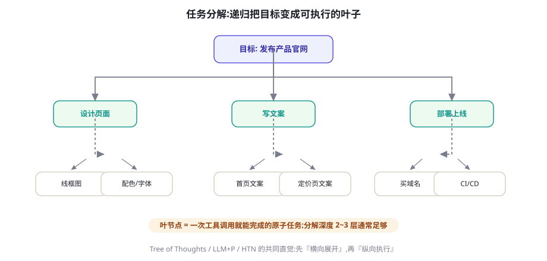
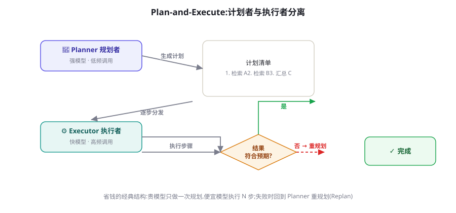

规划机制：任务分解、Plan-and-Execute 与树搜索
会走一步看一步的 Agent 只能处理简单任务；能「先看全局再落子、走错了会回头」的 Agent 才能处理复杂任务。本章讲透规划的三种形态——隐式分解、显式计划-执行、树状搜索——以及它们的成本结构与适用边界。
为什么需要规划：短视的代价
纯 ReAct 循环（第 16 章）有一个结构性弱点：每一步的决策只基于当前上下文，没有对「整件事」的持续承诺。这带来三类典型失败：目标漂移（十步之后忘了最初要什么）、贪心陷阱（每一步局部最优，合起来绕远路）、不可回溯（走错后没有「退两步」的机制）。规划机制的本质，是在「逐步反应」之上叠加一层对任务全局的显式表示。
用一张地图分清本章的三个层次：
- 隐式分解（Implicit Decomposition）：不产出独立计划，靠提示词让模型「在思考中」拆解任务——CoT 与 ReAct 的 Thought 都属于这一层。成本低，但承诺不可见、不可纠。
- 显式计划（Explicit Plan）：把计划作为一等公民持久化——一个待办清单、一张步骤表——执行中不断对照与修订。Plan-and-Execute 是代表。
- 搜索式规划（Search-based）：在「行动分支树」上探索多条路径再择优，可回溯、可比较。Tree of Thoughts 与 MCTS 是代表。

任务分解的力学：粒度、依赖与验收
分解看似简单，工程上却有三个高频翻车点，每个都值得单独拆解。
翻车点一：粒度失衡。拆得太粗（「写完报告」），叶子无法执行也没有验收意义；拆得太细（「打开编辑器」「输入第一行」），计划本身膨胀成第二份代码，维护成本反噬。健康的叶子粒度是「一次工具调用或一段短生成」——「检索三篇参考文献」「写第二章草稿」。一个实用的检验：每个叶子都应该能用一句话说出「做到什么程度算完成」，说不出来就是拆得不对。
翻车点二：忽略依赖结构。计划不是列表而是有向图：有些步骤必须串行（先查政策再定方案），有些天然并行（三个章节的资料检索）。让模型在产出计划时同时标注依赖（「步骤 3 依赖步骤 1 的结果」），执行器才能安全并行（第 17 章的并行机制在这里兑现价值）。
翻车点三：没有验收标准。计划若只有动作没有验收，执行器就无法判断「这一步成了没有」。给每个叶子附加机器可判或半机器可判的验收描述（「返回至少 3 篇 2024 年后的论文链接」），是让计划「可执行」而非「许愿」的关键。
{
"goal": "产出一份竞品分析报告初稿",
"steps": [
{"id": 1, "action": "search_web",
"args": {"query": "竞品A 2026 产品更新"}, "depends_on": [],
"accept": "拿到 ≥3 条 2026 年内的可靠来源"},
{"id": 2, "action": "search_web",
"args": {"query": "竞品B 2026 产品更新"}, "depends_on": [],
"accept": "同上"},
{"id": 3, "action": "write_section",
"args": {"topic": "产品能力对比"}, "depends_on": [1, 2],
"accept": "包含对比表格且每个结论有来源编号"},
{"id": 4, "action": "critique_and_fix",
"args": {"target": 3}, "depends_on": [3],
"accept": "评审清单全部通过"}
]
}Plan-and-Execute：计划者与执行者分离
把「制定计划」与「执行计划」拆成两个角色——通常两个不同的模型配置——是工程收益最确定的规划形态。Planner 用强模型、低频调用（一次任务 1~3 次：初规划 + 若干重规划），Executor 用快模型、高频调用（每个叶子一次）。成本结构通常比「全程强模型」节省一半以上，而质量损失集中在计划质量上——用更多推理算力（第 43 章）把 Plan 一次做对，是杠杆最高的花钱方式。

import json
from openai import OpenAI
client = OpenAI()
STRONG = "模型A" # 规划者:能力强
FAST = "模型B" # 执行者:速度快成本低
def make_plan(goal: str, context: str) -> list:
"""让强模型产出结构化计划(动作+依赖+验收)"""
r = client.chat.completions.create(
model=STRONG, temperature=0, response_format={"type": "json_object"},
messages=[
{"role": "system", "content": PLAN_PROMPT}, # 含 Schema 说明
{"role": "user", "content": f"目标: {goal}\n已知信息: {context}"}])
return json.loads(r.choices[0].message.content)["steps"]
def replan(goal, plan, step_id, failure_note) -> list:
"""把失败上下文交回强模型,产出修正后的计划"""
ctx = f"原计划: {json.dumps(plan, ensure_ascii=False)}\n" \
f"步骤{step_id}失败: {failure_note}"
return make_plan(goal, ctx)
def execute(goal: str) -> str:
plan, results = make_plan(goal, ""), {}
for round_ in range(3): # 最多重规划 2 次
failed = None
for step in plan: # 依赖就绪才执行(简化:按序)
obs = run_tool(step) # 快模型或直接工具执行
results[step["id"]] = obs
if not check_accept(step, obs): # 验收不过 → 触发重规划
failed = (step["id"], obs)
break
if not failed:
return synthesize(results) # 汇总产出
plan = replan(goal, plan, *failed) # 回到强模型重规划
return "未能完成,附已完成部分与卡点说明"这段骨架里最有工程价值的是 check_accept 触发的重规划（Replan）。它回答了「计划失效时怎么办」——这是所有规划系统的核心问题。重规划的触发条件应当显式设计，常见三类：验收失败（步骤结果不达标）、外部突变（工具报错、数据不存在）、预算告警（剩余步数/成本不足以走完原计划）。每类走不同的重规划模式：局部修补（只改后续步骤）、全局重构（重出完整计划）、优雅降级（收缩目标交付部分结果）。一律全局重构既贵又容易丢掉已完成的工作。
重规划如果毫无约束，模型会在每次失败后把计划改得越来越保守，最终退化为「只做最安全的一步」。对策：重规划提示词中必须包含原始目标与已完成工作清单，并要求模型输出「与原计划的 diff 及理由」——让每次计划变更都可审计、可否决。没有记忆的重规划等于允许 Agent 遗忘初心（记忆机制见第 19 章）。
完整案例：把一句模糊的话变成可执行计划
看规划机制如何处理真实输入。用户请求：「帮我看看我们上季度销售数据有什么问题」。这句话有三种「理解深度」，对应三种规划质量：
[劣质计划] 直接执行
1. 查询销售数据 → 2. 让模型"分析" → 3. 输出一段话
问题: "有什么问题"没有被定义,产出是不可验收的泛泛而谈。
[合格计划] 隐含假设但未确认
1. 查询季度销售总量与环比
2. 按产品线拆分,找异常波动
3. 输出三个"值得注意的现象"
问题: 拆解了,但所有假设(环比口径?哪些产品线?)都是静默的。
[优秀计划] 显式澄清 + 分层验收
0. 向用户确认: "问题"指未达目标/异常波动/结构恶化 中的哪些?
(若用户不回复,默认三者都查,并在报告中注明口径) ← 澄清步也是计划步
1. 拉取 Q2 销售明细(验收: 行数>0,含日期/产品线/金额字段)
2. 计算总量/环比/产品线占比(验收: 三张表,数字可复算)
3. 规则初筛异常: 环比波动>±20% 的产品线
4. 对每个异常产品线,检索同期事件(促销/缺货/竞品动作)
5. 产出报告: 每个现象 = 数据证据 + 可能原因 + 置信度
(验收: 每个结论至少一条数据锚点,禁止无证据断言)三档的差异不在「用了什么算法」，而在规划前的澄清、计划中的验收、产出的锚点——这三个元素把「看起来在分析」变成「可检验的分析」。把这三元素做成 Planner 提示词的固定要求，是提升 Agent 产出质量最便宜的一笔投资。
树搜索：把「想一想」变成「多想几条路」
Plan-and-Execute 仍然只维护一条计划。当任务具有高分支不确定性（走哪条路线都可能有戏，但事后才知道哪条通），就需要在「行动树」上搜索。Tree of Thoughts（ToT, Yao et al. 2023, arXiv:2305.10601）把 CoT 的线性思考推广为树状探索：每步生成多个候选想法，用模型自评（或外部验证器）打分，广度/深度优先地展开与剪枝。它在 24 点游戏、创意写作等需要回溯的任务上显著超越线性 CoT——代价是调用次数呈数量级增长（一次任务几十到上百次生成）。
def tot_solve(problem, b=3, max_depth=4):
"""b=每层分支数; 返回最优思维链"""
frontier = [[("root", problem)]]
for depth in range(max_depth):
candidates = []
for path in frontier: # 对每条现存路径
for k in range(b): # 生成 b 个候选下一步
thought = llm(f"问题: {problem}\n已有思路: {path}\n"
f"给出下一个中间步骤(第{k+1}个不同方向)")
score = llm_score(problem, path, thought) # 模型自评 1-10
candidates.append((score, path + [(f"s{depth}", thought)]))
# 保留最好的 b 条路径(束搜索);分数低于阈值的剪枝
candidates.sort(key=lambda x: -x[0])
frontier = [p for s, p in candidates[:b] if s >= 4]
if not frontier:
return None # 全部剪光→需回溯或重启
best = max(((llm_score(problem, p, "整体"), p) for p in frontier))
return best[1]ToT 之后，LATS（Language Agent Tree Search, 2023, arXiv:2310.04406）把 MCTS 的完整机制（UCT 选择、模拟、反向传播）带入 Agent 场景，并让「环境反馈」替代纯粹的模型自评作为价值信号——搜索质量更高，工程也更重。何时值得上树搜索？三个判据：解空间确实分支（存在多条可行路线）、单步成败可快速判定（有验证器）、任务价值高到能支付 10~100 倍的推理成本。三者缺一，束搜索甚至单路 Plan-and-Execute 就是更优解。深度求索的 o1/R1 类推理模型（第 43 章）可以理解为「把搜索内化进权重与解码过程」的商业化形态——很多过去需要外挂 ToT 的任务，如今一次生成即可完成，这正是「模型越强，系统越薄」在规划维度的体现。
递归规划与分层控制：当计划本身太大
任务大到一张计划装不下时（「把公司文档库整理成知识库」），需要递归结构：高层计划只拆到「子项目」粒度，每个子项目由独立的规划-执行循环负责。这就是分层控制（Hierarchical Control），与经典 HTN（分层任务网络）规划思想同源（第 94 章）。工程上有两种实现取舍：
- 栈式递归：主 Agent 产出子目标清单，依次为每个子目标启动「子规划-执行」流程，完成后回到主层。上下文隔离好（子过程的噪音不污染主层），但信息传递靠显式交接（子层要输出结构化结论）。
- 目录式委派：主 Agent 保持一个「子项目看板」，通过
spawn_subtask工具派发任务给并行的子 Agent（每个子 Agent 自带完整的规划循环），通过看板读取进度与结果。并行度高，但协调成本与重复工作风险上升（第 24 章的多 Agent 权衡完全适用）。
实践中工作良好的结构是「3 层封顶」：目标层（周级/项目级）→ 项目层（任务清单）→ 执行层（工具调用）。每层之间用结构化交接物（验收过的产出）连接，而不是用「继续深挖」这类模糊指令。超过三层的委托链几乎必然出现目标失真——每一层的语义损耗累积起来，底层交付物与顶层意图的对不上号，是长链委托的头号失败原因。
LLM+P 与形式化规划：当正确性压倒一切
第三条路线绕开「让模型直接规划」，转而让模型做翻译、让经典规划器做求解。LLM+P（Liu et al. 2023, arXiv:2304.11477）把任务描述翻译成 PDDL（Planning Domain Definition Language），交给经典规划器（如 Fast Downward）求解出保证正确的计划，再译回自然语言执行。经典规划器在封闭世界里提供完备性与最优性保证——这是任何 LLM 自由规划给不了的。适用边界同样清晰：领域必须能被形式化（状态、动作、效果可枚举），现实业务里能完整形式化的场景有限，但混合策略很有生命力——主流程用形式化规划保正确，长尾场景由 LLM 兜底。第 94 章将从理论侧完整展开这条路线。
| 形态 | 成本 | 可回溯 | 适用场景 | 失效场景 |
|---|---|---|---|---|
| 隐式分解(CoT/ReAct) | 1× | 无 | 步骤 ≤5 的线性任务 | 长程任务漂移 |
| Plan-and-Execute | 2~3× | 计划级 | 10+ 步、可结构化的任务 | 高度不确定、需要试错的探索 |
| 树搜索(ToT/LATS) | 10~100× | 路径级 | 高分支、可快速验证的难题 | 验证器不可靠时(垃圾进垃圾出) |
| LLM+P 形式化 | 2~5× | 全局最优保证 | 可形式化的封闭域流程 | 开放世界、状态难枚举 |
怎么评估「规划变好了」
引入规划机制后，如何证明它有效而非自我安慰？三个层次的证据，从弱到强：
- 效率证据：同批任务的成功率不变时，工具调用次数与总 token 是否下降（规划减少无效动作）。注意控制「规划本身的成本」计入分子。
- 稳健证据：把测试任务中的 20% 加入「中途干扰」（工具临时失败、需求中途变更），比较有无重规划机制的任务恢复率。规划的真正价值更多体现在受干扰时的表现，而非理想路径。
- 质量证据：产出物评分（人工或 LLM-as-Judge，第 57 章）按「是否解决了用户真实问题」评估——防止规划把 Agent 变成「流程优雅但答非所问」。
一个诚实的警告：在评测集中，规划机制的收益往往被高估——因为测试任务天然「可结构化」。真实流量里那部分不可结构化的请求，正是规划系统最容易翻车的地方。所以第 3 条证据（真实任务抽样）不可省略。
直觉上，规划「多了一步」应该更贵。实际账本常常相反：无规划的 Agent 在复杂任务上平均产生 15~30 次工具调用，其中相当比例是「走到一半发现不对」的回头路——每次回头路的成本不只是那次调用本身，还有随之膨胀的历史（每次重试都把失败上下文带进后续所有轮次的计费）。有规划的 Agent 典型是 8~12 次调用，且历史更短。粗算下来，任务复杂度超过五步后，「先花一次强模型调用做规划」的期望成本通常低于「无规划裸跑」——更不用说成功率差异。这个经济结构解释了为什么 2024 年之后的主流 Agent 产品几乎都内置了显式规划层：不是因为规划「更聪明」，而是因为回头路是 Agent 最贵的开支。
被低估的一面：计划是人机接口
到目前为止我们把计划当作「给执行器的指令」，但它在产品里还有一个同样重要的身份：给用户的承诺界面。把 Agent 的计划实时展示给用户（「我将：1 检索文献 2 汇总对比 3 生成报告，预计 3 分钟」），带来三个立竿见影的收益：用户可以在执行前纠偏（成本最低的错误拦截点）；等待焦虑显著下降（进度可预期）；信任建立在「透明的过程」而非「黑盒的结果」上。Deep Research 类产品普遍展示研究提纲让用户确认，就是这个原理的产品化。
进一步的设计空间：让用户能编辑计划（划掉一步、增加一步、调整顺序），编辑后的计划作为「用户约束」注入后续执行与重规划。这在技术上只是把人工修改当作一次特殊的 replan 输入，但在产品感知上是质变——从「AI 替你干活」变成「AI 与你共享一张作战图」。第 25 章（人机协同）会把这个思路放进完整的审批与中断框架。
如果只能做一件事：把结构化计划渲染成带状态标记的清单（✓ 已完成 / ▶ 进行中 / ○ 待办），在每个状态变化时推送事件。这 50 行前端代码的体验收益，超过多数「智能体人格化」的精心设计。
规划系统的故障诊断手册
规划引入了自己的故障谱系。五类高频故障、检测信号与处方：
| 故障 | 轨迹中的信号 | 处方 |
|---|---|---|
| 计划幻觉 | 计划引用不存在的工具/数据源 | Planner 的上下文中注入可用工具清单与数据目录；计划中的每个 action 做注册表校验 |
| 过度规划 | 计划 20+ 步才开始执行；实际 5 步就完成 | 限制初始计划步数上限；要求 Planner 标注「不确定时先出粗计划」 |
| 计划-执行脱节 | 执行的动作与计划对不上 | 每步执行前注入「当前应执行步骤 N 及其验收」；偏离时记录原因 |
| 重规划风暴 | 一次任务重规划 ≥3 次 | 触发条件加阈值；第二次起强制「局部修补模式」；达到上限优雅降级 |
| 幽灵验收 | 验收总是「通过」但产出质量差 | 验收标准太模糊——把验收改写为可判定的检查（数量、格式、引用存在性）或引入评审模型（第 57 章） |
规划即编排：与多 Agent 的接线
本章结尾把规划接到全书后文的两条线上。与多 Agent 的关系：多 Agent 系统（第 24 章）里的 Orchestrator，本质就是一个「把计划分派给工人」的 Planner——本章的结构化计划（动作+依赖+验收）直接就是分派协议。先做好单 Agent 的规划，再把「执行叶子」替换为「委派子 Agent」，是多 Agent 的正确打开顺序；跳过前者直接上后者，是把混乱并行化。与长时程的关系：第 76 章会把计划外置为文件、把重规划升级为「会话恢复后的再对齐」，本章的机制全部是它的地基。规划不是一个「功能」，而是贯穿上下文管理、多 Agent、长时程的组织性骨架——值得你花一个下午把它在代码里做扎实。
历史注脚：从 STRIPS 到 LLM 的半世纪弧线
本章的机制在 AI 史上都有直系祖先：STRIPS（1971）确立「动作=前置条件+效果」的表示，至今仍是 PDDL 的核心；HTN（1970s-90s）的「任务分解到原子动作」正是本章递归规划的源头；BBN 的 SOAR 与 ACT-R 认知架构把「目标栈」作为认知的核心结构——今天 Agent 系统提示词里的「维护当前目标清单」，与目标栈是同一思想的产品化。LLM 规划的独特贡献是把「建域」的成本从数月的人工知识工程降到一次提示词：经典规划器五十年没能普及，卡的不是求解算法，而是「把现实翻译成形式域」的成本——LLM 恰好是史上最好的翻译器。这个「神经翻译 + 符号求解」的组合，可能是本章四条路线里最被低估的一条。
本节最后回答一个选型问题：「我的任务需要哪档规划？」给出一个可操作的决策序列。第一问：任务能否用一个固定的流程模板表达？能 → 不需要运行时规划，把模板写进代码（工作流）。第二问：执行路径是否高度依赖中间结果、且步骤超过五个？是 → Plan-and-Execute，配置验收与重规划。第三问：是否存在「多条可行路线且事后才知对错」的分叉？有 → 对关键分叉局部引入束搜索或 ToT（不必全任务树搜索）。第四问：领域是否可完全形式化且正确性要求极高？是 → 评估 LLM+P 混合架构。四问走完，绝大多数业务任务会落在「模板 + 局部 Plan-and-Execute」的组合上——这不是保守，而是把规划预算花在真实需要的地方。
规划粒度与「计划即上下文」
最后一个工程视角：规划机制的价值实现方式，是把计划注入上下文。计划在文件里而不是上下文里，等于没有计划。落地的三个层次：初级的把当前计划全文放进系统提示词；中级用专门的消息通道在每轮注入「计划快照 + 当前步高亮」；高级（长时程任务，见第 76 章）把计划持久化为文件（如 Manus 的 todo.md 模式），Agent 通过读写文件来维护计划——计划本身成为可被工具操作的外部状态。第三种在超长任务中优势明显：计划可以比上下文活得久，压缩摘要时也不会把「承诺」压没。
粒度上还有一个容易忽略的细节：注入上下文的应是「剩余计划」而非「完整计划」。已完成步骤压缩成一行摘要（「已完成 1-3,见归档」），模型注意力集中在未完成部分——这与第 23 章上下文预算的原则一脉相承。
本章小结
- 规划三层：隐式分解（便宜、无承诺）、显式计划（可对照可修订）、树搜索（可回溯、昂贵）。
- 任务分解三翻车点：粒度失衡、忽略依赖、无验收标准——结构化计划 = 动作 + 依赖图 + 验收。
- Plan-and-Execute 的经济性来自「强弱模型分工」；重规划必须有触发条件分类与记忆约束，防止橡皮筋效应。
- 树搜索的适用判据：分支空间真实存在、验证器可靠、任务价值能支付 10~100 倍成本。
- 计划的价值靠「注入上下文」兑现；长时程任务把计划外置为文件，比上下文活得久。
- 计划同时是用户界面：展示、允许编辑、作为重规划约束——这是成本最低的信任建设。
- 回头路是 Agent 最贵的开支：规划以「一次强模型调用」置换「多次失败的执行成本」，五步以上任务通常划算。
- 评估规划机制要看三层证据：效率（调用数下降）、稳健（干扰恢复率）、质量（真实任务抽样）。
自测题
- 你的一个任务跑了 20 步后开始反复检索同一主题——用本章概念诊断：缺的是哪一层规划机制？
- 给「组织一次技术分享会」写一个结构化计划（≥5 步），标注依赖与验收；指出哪两步可以并行。
- 重规划的橡皮筋效应在人类组织中对应什么现象？约束它的「原始目标 + diff 说明」在人类制度里对应什么？
- 为「给新员工办理入职」设计分层计划：目标层 3 个子项目，各拆 3 步执行层；标出需要人工介入的两个节点。
- 什么信号应该让你从 Plan-and-Execute 升级到树搜索？什么信号应该让你降级回 ReAct？
两个高频疑问
Q：规划机制和提示词里的「请先制定计划」有什么区别？一句话提示词只是请求，不是机制。区别在于三点：计划是否结构化持久（可校验、可 diff、可注入后续每一轮）；是否有验收与重规划闭环（失效有定义好的出路）；是否有成本约束（步数、并行度、重规划次数上限）。三者齐备才算机制。实践中可以渐进：先用提示词版跑通业务，再按本章结构逐步机制化。
Q：Plan 模型输出的计划不合 Schema 怎么办？三道防线：用结构化输出（JSON Schema / 受约束解码，第 8 章）从源头压制；Schema 校验失败把具体错误回给模型重试（至多 2 次）；仍失败则降级为「单步直执行 + 记录告警」。永远不要让计划解析失败演变成整个任务的崩溃。
参考文献与延伸阅读
- Yao, S. et al. (2023). Tree of Thoughts: Deliberate Problem Solving with Large Language Models. NeurIPS 2023. arXiv:2305.10601
- Liu, B. et al. (2023). LLM+P: Empowering Large Language Models with Optimal Planning Proficiency. arXiv:2304.11477
- Zhou, A. et al. (2023). Language Agent Tree Search Unifies Reasoning, Acting, and Planning in Language Models. ICML 2024. arXiv:2310.04406
- Wang, L. et al. (2023). Plan-and-Solve Prompting: Improving Zero-Shot Chain-of-Thought Reasoning by Large Language Models. ACL 2024. arXiv:2305.04091
- Anthropic (2025). How we built our multi-agent research system（编排与计划的工程实践）. anthropic.com/engineering